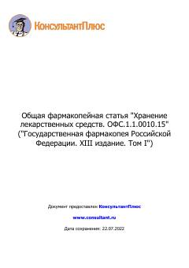

XLDori vositalarini saqlash va muomalada bo'lishining umumiy farmakopeya talablari.
Ushbu hujjat dori vositalari, yordamchi moddalar va farmatsevtik substansiyalarni saqlash bo'yicha umumiy talablarni belgilaydi. Unda saqlash binolariga qo'yiladigan talablar, mikroiqlim sharoitlari va sanitariya rejimi batafsil bayon etilgan.